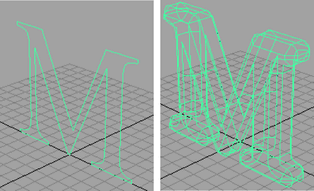
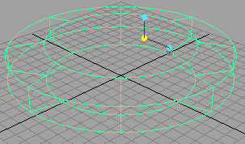
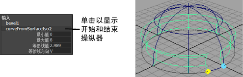
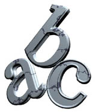
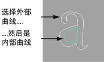

使用，以便从任何曲线（包括文本曲线和修剪边）创建带倒角边的挤出曲面。例如，在建筑上创建壁架，或在装有椅垫的椅子上创建滚边。
创建简单的挤出和倒角
- 选择曲线。
可以从正常 3D 曲线、等参线和曲面边创建倒角曲面。
- 选择。 
- 在工具箱中，单击“显示操纵器工具”(Show Manipulators tool)以操纵倒角曲面。 
如果已启用“倒角选项”(Bevel Options)窗口中的“部分”(Partial)选项，请单击通道盒中的曲线或等参线标题以显示其他属性，从而可以仅使用曲线的一部分。

倒角 + (Bevel Plus)
倒角 + 具有“曲面 > 倒角”(Surfaces > Bevel)操作所无法提供的各种功能：
- 创建完全实体的曲面，包括倒角曲线任意一端上的封口。曲面在变形时不会断开，这非常适用于飞行徽标。
- 为倒角形状提供了各种样式选项。
- 可以更好地控制曲面的细分。
“倒角 +”(Bevel Plus)对创建实体字母和徽标非常有用。

使用“倒角 +”(Bevel Plus)进行倒角
- 选择单条曲线。对于带洞的形状（如字母 A），请首先选择外部曲线，然后选择内部曲线。 
- 选择曲面 > 倒角 + (Surfaces > Bevel Plus) >
 。
。 - 设定选项。
- 单击“倒角”(Bevel)。